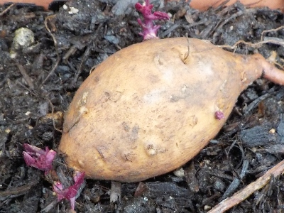
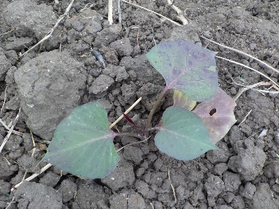
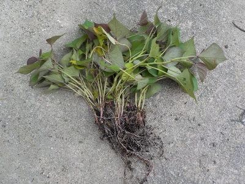

サツマイモの苗を伸ばすためにプランターにサツマイモを入れました。
更新日 : 2026/04/29

去年収穫したサツマイモを大切に冷蔵庫の上で保管して冬を越しました。
もう小さい芽が出てますね。これからすくすくと育って欲しいです。
更新日 : 2026/04/29

去年収穫したサツマイモを大切に冷蔵庫の上で保管して冬を越しました。
もう小さい芽が出てますね。これからすくすくと育って欲しいです。
更新日 : 2026/06/08

まだ小さいですけど根っこがすでに出てるので水やりはしていません。梅雨入りしたので今なら放置で大丈夫って植えました。
マルチも水やりもなしでらくちんです。
更新日 : 2026/06/27

根っこあるのでここまで大きくする必要ないですが、時間がなくてかまっていませんでした。
これで15本あります。今年はこれでおしまいにします。
サツマイモを蒸すのは難しいので、適度な大きさに切って茹でるようにしています。